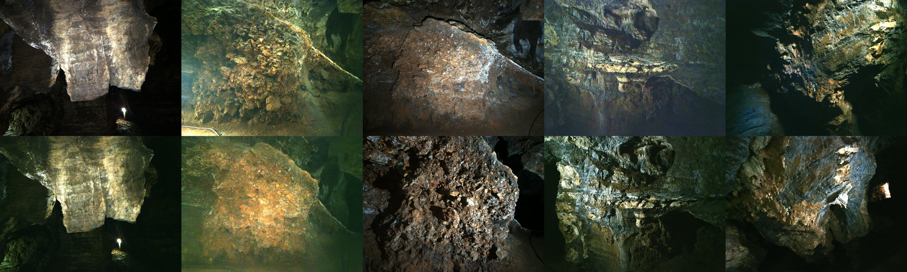

The Sterkfontein Caves Dataset A Novel View Rendering Challenge from the Cradle of Humankind
European Conference on Computer Vision (ECCV) 2026

Abstract
We introduce the challenging Sterkfontein Caves dataset comprising ten underground scenes from a UNESCO World Heritage Site, and use it to find a new simple baseline method that beats existing low-light reconstruction methods upon it. Each scene is of complex surface geometry and high-frequency texture from cave rock structures, including human-made markings on the rock face. The captured images exhibit varied or uncontrolled lighting over a large dynamic range, with glare artefacts, and low signal-to-noise ratios from the challenging dark real-world capture scenario. We propose a view synthesis benchmark for low-light RAW and sRGB reconstruction. All tested NeRF and Gaussian splatting baseline methods struggle on this data, with the best performing method in terms of reliability and average PSNR being our Raw-Nerfacto method. We discuss these errors in detail to find directions of future work for the community in overcoming the significant challenges that remain in low-light high-detail scenes.
Dataset
How to download
The dataset is hosted on Globus, which transfers the whole collection to your computer in one step — you do not download files individually. Pick whichever option suits you; all three copy the full dataset recursively (parallelized, checksum-verified, and resumable if the connection drops).
Option 1 — Web app (no coding)
- Install Globus Connect Personal (free; Windows, macOS, Linux) to turn your computer into a Globus collection. If your institution already provides a Globus endpoint, you can use that instead.
- Click Download Dataset above and sign in (free — via your institution, Google, or ORCID).
- In the two-panel file manager, set your own computer as the destination, select everything at the root, and click Transfer.
Option 2 — Command line (Globus CLI)
Install with pip install globus-cli, run globus login, then transfer recursively:
globus transfer af25f346-0335-4cf9-ba7e-a74cdf582ce0:/ YOUR-ENDPOINT-ID:/ --recursiveOption 3 — Python (Globus SDK)
Install with pip install globus-sdk, then:
import globus_sdk
SOURCE = "af25f346-0335-4cf9-ba7e-a74cdf582ce0" # Sterkfontein dataset collection
DEST = "YOUR-ENDPOINT-ID" # your Globus Connect Personal collection
CLIENT_ID = "YOUR-CLIENT-ID" # register an app at app.globus.org/settings/developers
# One-time login: opens a URL, paste back the code it gives you
auth = globus_sdk.NativeAppAuthClient(CLIENT_ID)
auth.oauth2_start_flow(requested_scopes=globus_sdk.scopes.TransferScopes.all)
print("Log in here:", auth.oauth2_get_authorize_url())
tokens = auth.oauth2_exchange_code_for_tokens(input("Auth code: ").strip())
access_token = tokens.by_resource_server["transfer.api.globus.org"]["access_token"]
tc = globus_sdk.TransferClient(authorizer=globus_sdk.AccessTokenAuthorizer(access_token))
# Recursively transfer the entire dataset
data = globus_sdk.TransferData(tc, SOURCE, DEST, label="Sterkfontein dataset")
data.add_item("/", "/sterkfontein/", recursive=True)
task = tc.submit_transfer(data)
print("Submitted - track at https://app.globus.org/activity/" + task["task_id"])Citation
@inproceedings{sterkfontein,
title = {The Sterkfontein Caves Dataset: A Novel View Rendering
Challenge from the Cradle of Humankind},
author = {Liu, Ireton and Xu, Brian and Stratford, Dominic and
James, Steven and Klein, Richard and Tompkin, James},
booktitle = {Proceedings of the European Conference on Computer Vision (ECCV)},
year = {2026}
}